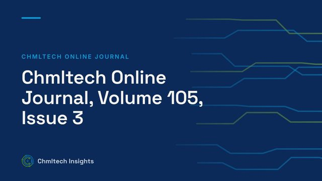
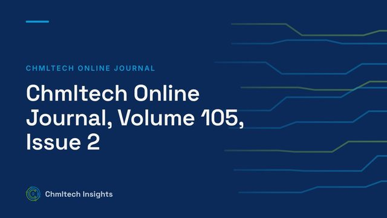
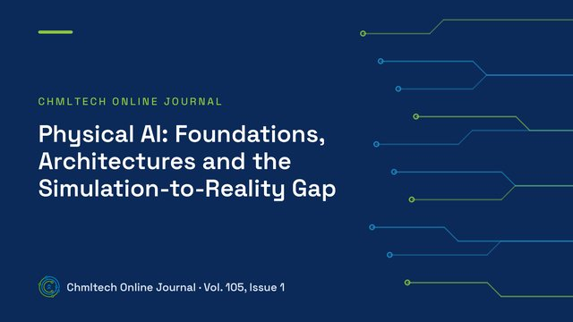

Unified data layer
Securely connect the systems you already run, such as ERP, accounting, CRM, inventory, documents and email, so AI works from one consistent view of the business.
Home / Solutions / AI Operating System
Solutions · AI Operating System
Build your company's AI Operating System.
We design and build an AI Operating System for your business: one connected layer that links your data, company knowledge, AI agents and workflows, so AI works across the whole company, not in scattered tools.
What is an AI OS?
Most companies adopt AI one tool at a time: a chatbot here, a writing assistant there. Each one works alone, without your data or context. An AI Operating System changes that. It connects your systems and knowledge into one secure core, then puts AI assistants, agents and automations on top, all governed by your rules.
The result is AI that knows your business, works inside your processes and keeps improving as you use it.
What we build
Each block is designed around your processes, data and team, and delivered in phases.
Securely connect the systems you already run, such as ERP, accounting, CRM, inventory, documents and email, so AI works from one consistent view of the business.
Turn SOPs, policies, specs and past projects into searchable knowledge. Your team gets accurate answers with links back to the source documents.
Role-based assistants for sales, operations, finance, HR and customer service that draft, summarise, look up and act inside your workflows.
Automate hand-offs, approvals, data entry and reporting across departments, with people kept in the loop where judgement matters.
Live operating metrics and AI-generated insights, so leaders see performance and exceptions without chasing spreadsheets.
Access controls, audit trails, privacy safeguards and clear usage policies, so AI adoption stays safe, compliant and trusted.
How we build it
AI readiness assessment: goals, data, systems, skills and risks.
Map processes and information flows; identify high-value AI use cases.
Design the AI OS architecture and a phased roadmap with quick wins first.
Build the core, connect your systems, deploy the first assistants and automations, and train your team.
Track adoption and KPIs, gather feedback and expand the AI OS step by step.
Why it matters
An AI OS turns AI from individual experiments into a shared capability that compounds over time.
Free course
Our free, self-paced course Building Your AI Operating System walks through the building blocks, architecture, data and knowledge, assistants and agents, governance and a 90-day plan, with interactive labs and a certificate.
Questions
No. An AI Operating System sits on top of the systems you already use and connects them. We integrate with your current ERP, accounting, CRM, file storage and email wherever possible.
We are model-agnostic. We select the models that best fit each task, your budget and your data requirements, and design the AI OS so models can be swapped as the technology improves.
Security and governance are designed in from the start: role-based access, data minimisation, audit logs, human approval for sensitive actions, and alignment with Canadian privacy requirements such as PIPEDA.
Most clients start with an AI readiness assessment and a focused pilot on one or two high-value use cases, then expand the AI OS in phases as results are proven.
From our insights

Artificial Intelligence
Deploying physical AI: failure modes, functional safety standards and EU regulation, safety architecture, reliability statistics and a worked cost…

Artificial Intelligence
Where physical AI applies in process plants and factories: inspection robots, learned grasping, reinforcement learning control and a readiness…

Artificial Intelligence
Foundations of physical AI: the perception-planning-control stack, reinforcement and imitation learning, vision-language-action models and the…
Book a strategy call. We will talk through your goals, pain points and where AI, systems or process work can make the biggest difference.
Or email info@chmltech.com